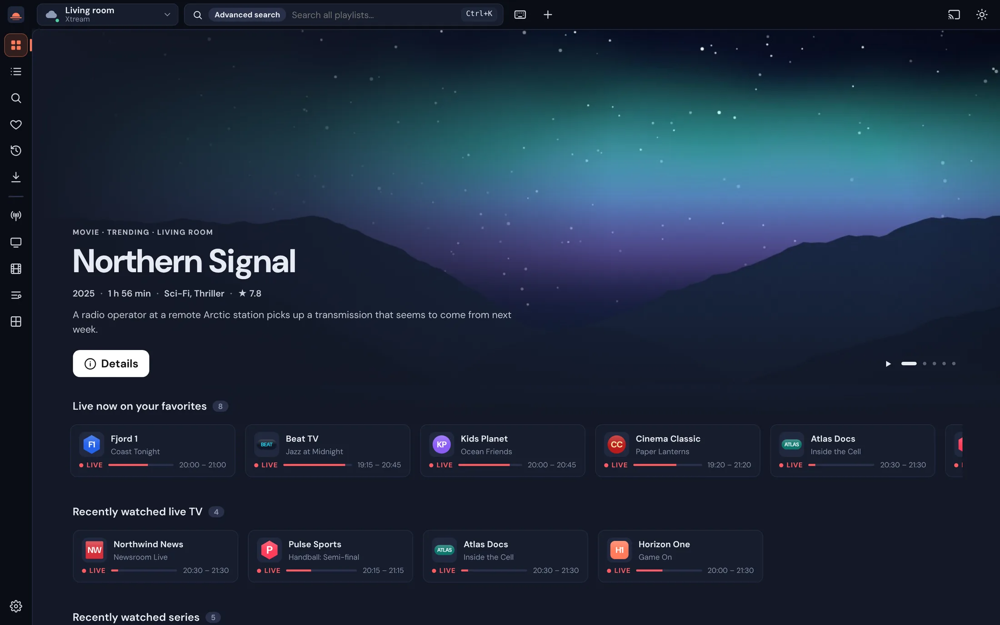
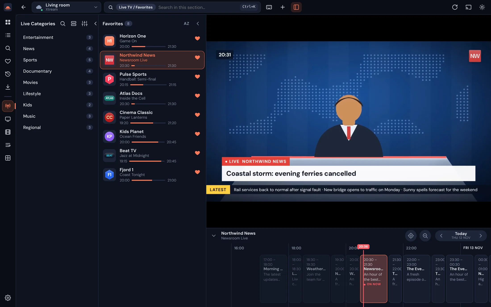
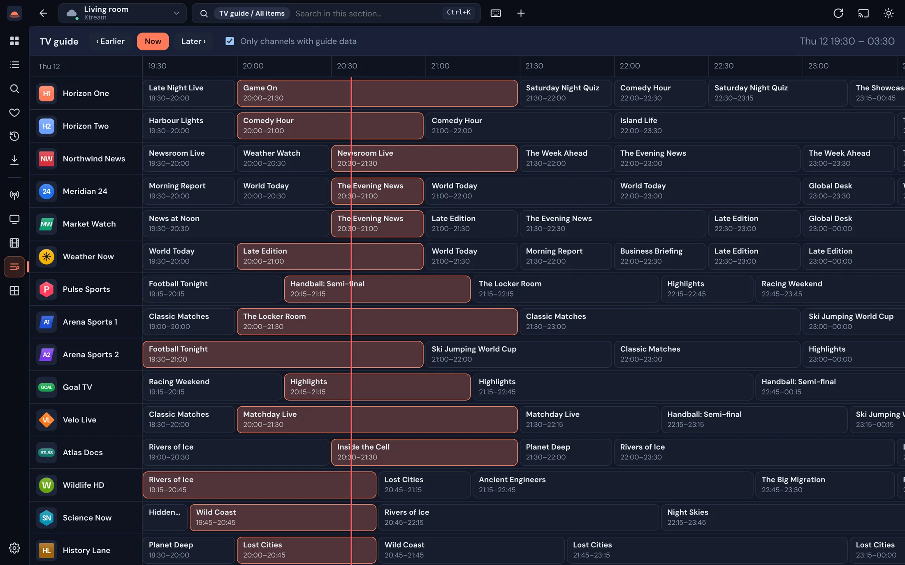
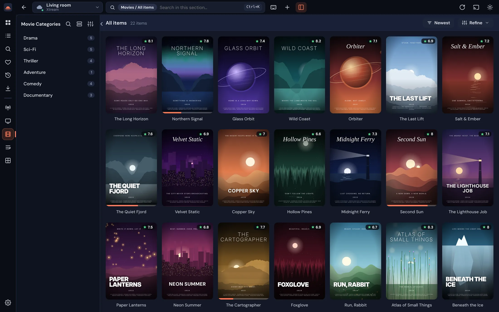
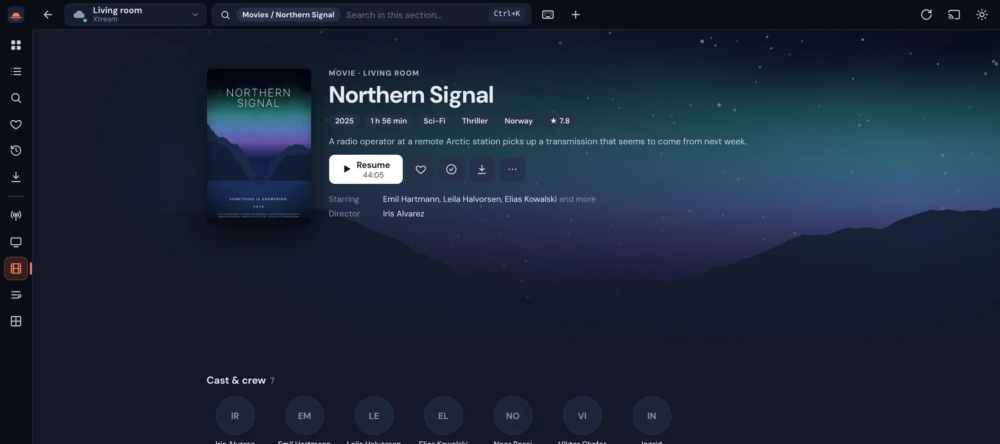
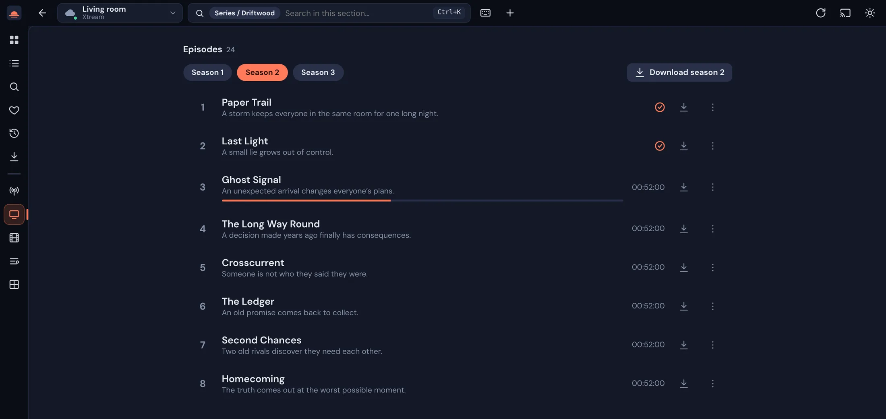
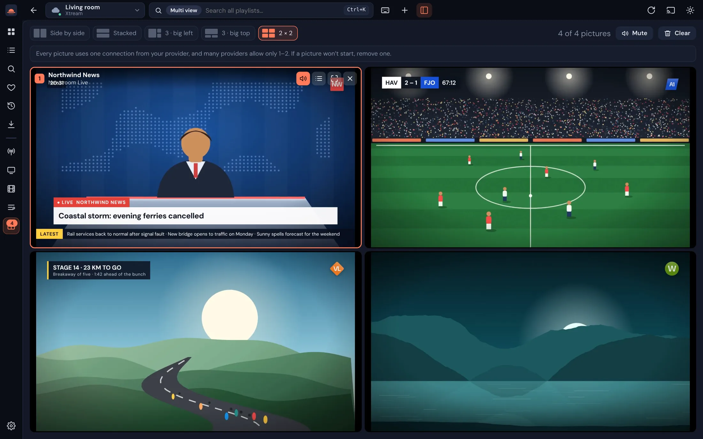
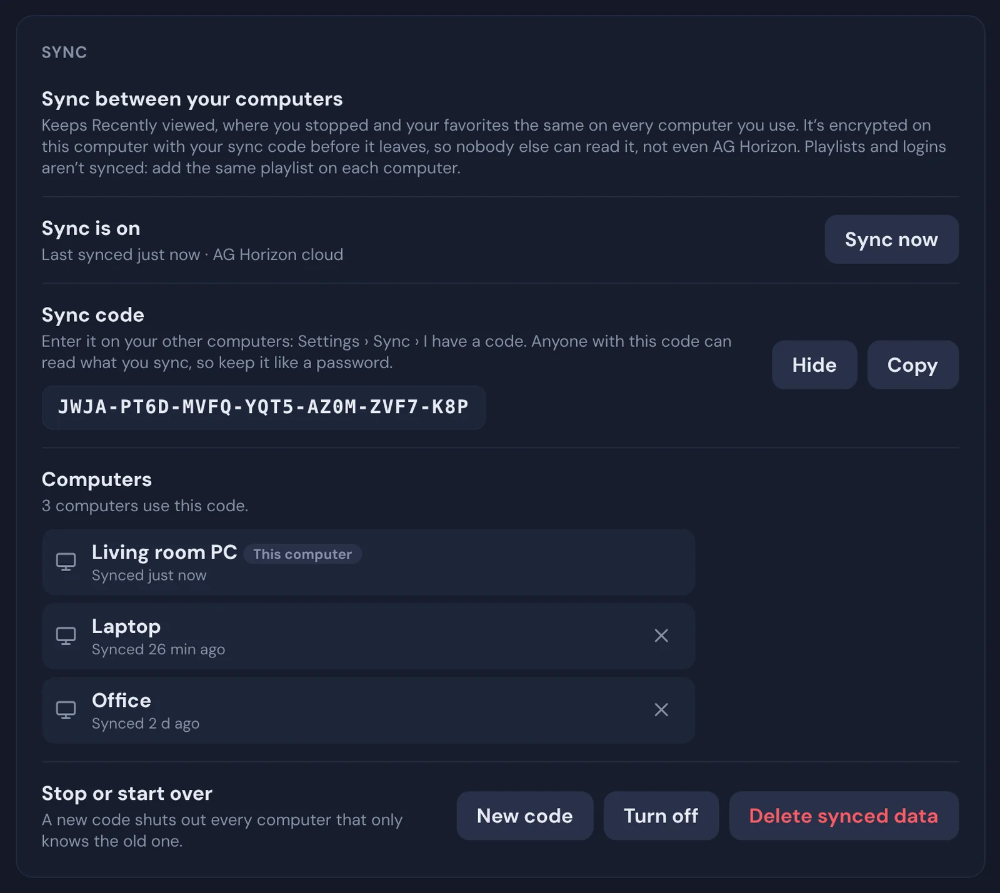
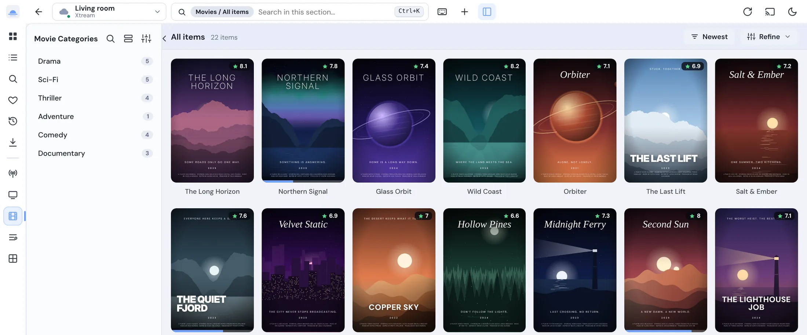

Second screen
Send the picture to a TV or another monitor. It mirrors the decoded picture, so it uses no extra connection and stays in sync.
Free for Windows, macOS & Linux
AG Horizon turns your Xtream Codes or M3U playlist into a proper TV experience: live channels with a real programme guide, movies and series with posters and “Resume”, four pictures at once, and a second screen.
Free download · Updates itself

Live TV
Channel list on the left, the picture in the middle, and the guide for that channel right under it. What’s on now and what’s next is always one glance away.

TV guide
Every channel, hour by hour, with a line for right now. AG Horizon reads your provider’s XMLTV guide (even the huge, gzipped ones) and matches it to your channels by ID or by name.

Movies & series
Posters, ratings and categories instead of an endless list of names. Sort by newest or top rated, open a title for the plot and cast, and pick up exactly where you left off.



Multi view
The match, the news and the race at the same time. Choose a layout, click a picture to hear it, and swap channels without leaving the page.

Sync
Recently viewed, where you stopped and your favorites follow you to every computer you use. Create a sync code on one, type it on the others, and that’s it.

And everything around it
Send the picture to a TV or another monitor. It mirrors the decoded picture, so it uses no extra connection and stays in sync.
HEVC video or DTS / AC-3 sound that won’t play? Compatibility mode converts it on the fly with the built-in ffmpeg.
HEVC→H.264 DTS→AAC
Save movies and whole seasons for the train or the cabin, with subtitles stored next to them.
Built-in subtitle tracks, or find them on OpenSubtitles.com right from the player.
Several Xtream and M3U sources side by side, each with a live status. Drop an .m3u file on the window to add it.
One search across every playlist, and a command palette (Ctrl K) for when your hands are already on the keyboard.
Dark, light or OLED black, and eight accent colours. Try them on this page:

AG Horizon is a player. It comes with no channels, movies or subscriptions. Add the Xtream Codes login or M3U link from a TV service you’re entitled to watch, and AG Horizon does the rest. Your logins stay on your own computer.
Latest version
Free, for Windows, macOS and Linux. After installing, it keeps itself up to date.
chmod +x), then run it.
No. It’s a player, like a TV without an antenna. You add a playlist from a service you subscribe to: an Xtream Codes login (server, username, password, or a pasted get.php link) or an M3U / M3U8 link or file.
Yes. Install it on each and add the same playlist. Turn on sync in Settings › Sync to keep what you’ve watched, where you stopped and your favorites the same everywhere. It’s encrypted with a code only your computers have.
Yes. No account and no ads. Download it and add your playlist.
Only on your own computer, inside the app’s local storage. AG Horizon talks to your provider directly, and logins are never synced. More in the privacy text.
The installers aren’t code-signed yet, which costs a yearly fee. On Windows choose More info › Run anyway; on a Mac right-click the app and choose Open. You only do this once.
That’s usually HEVC video or DTS / AC-3 sound. AG Horizon notices and switches to compatibility mode by itself, converting the stream on the fly. You can also set it to Always or Off in Settings › Playback.
Up to four in Multi view, but each picture uses one connection, and many providers allow only one or two. The second screen doesn’t need an extra connection.